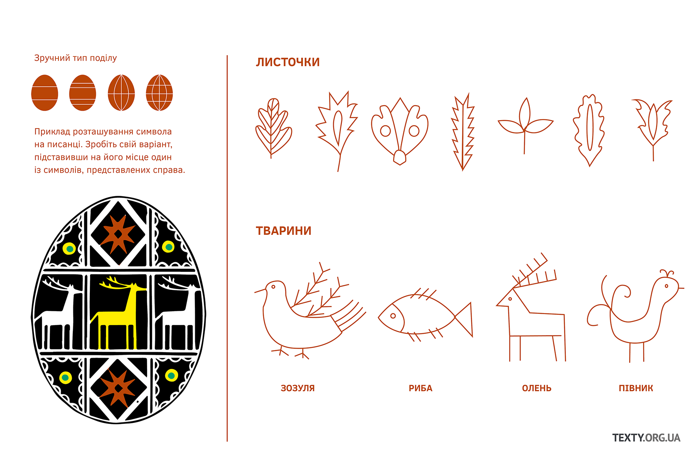
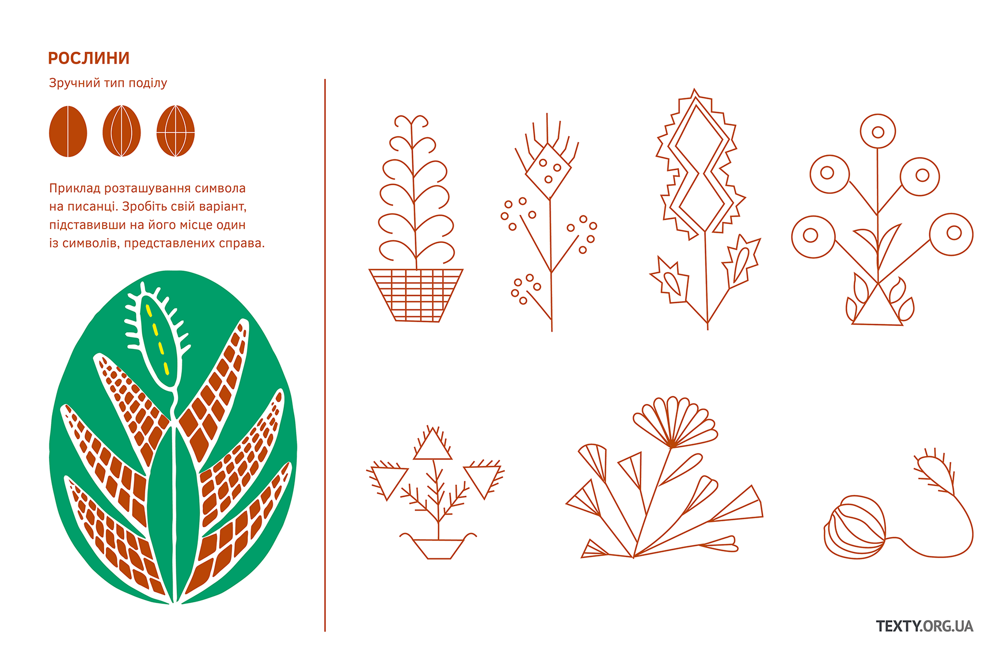
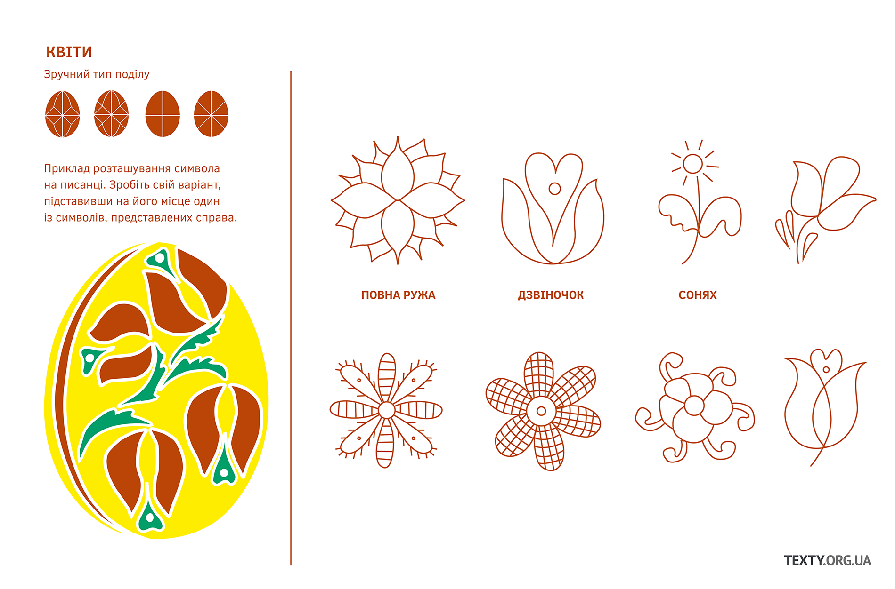
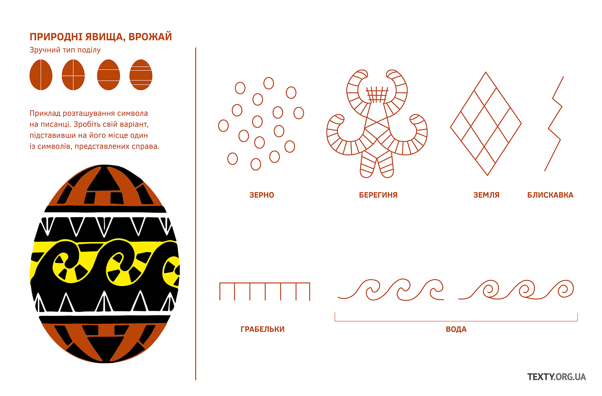
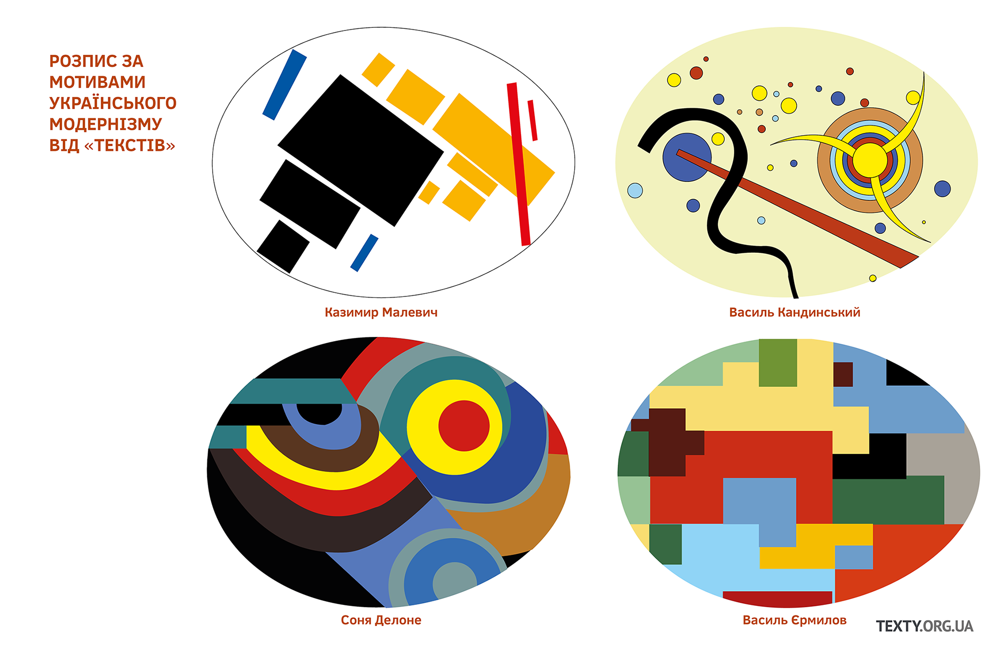
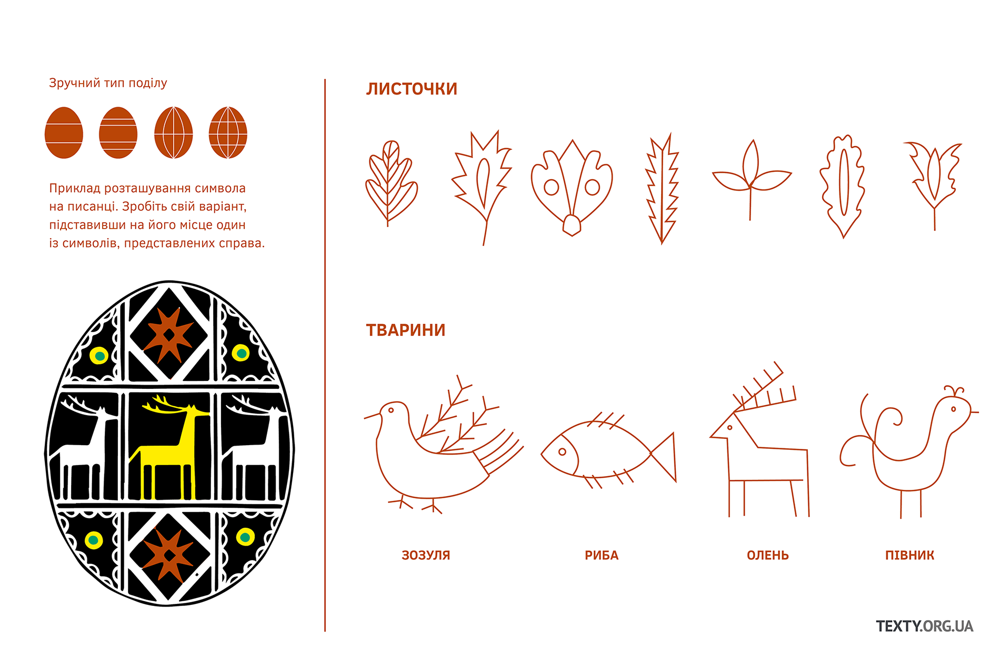
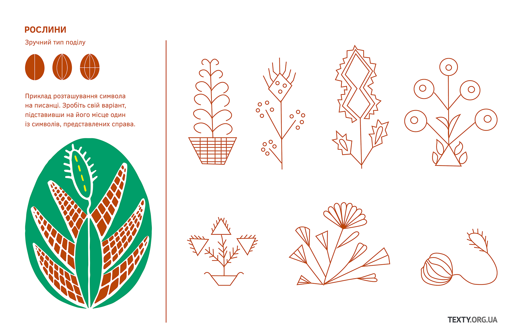
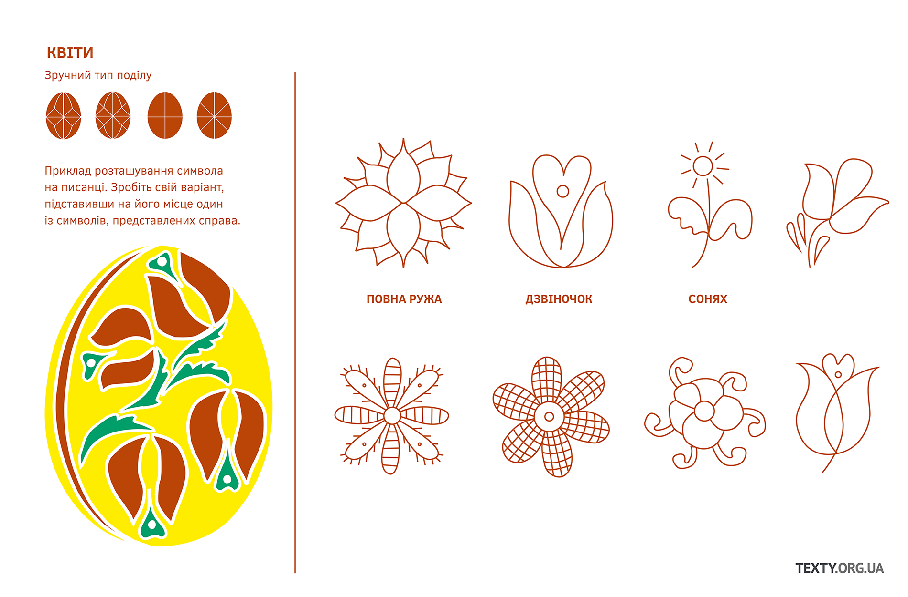
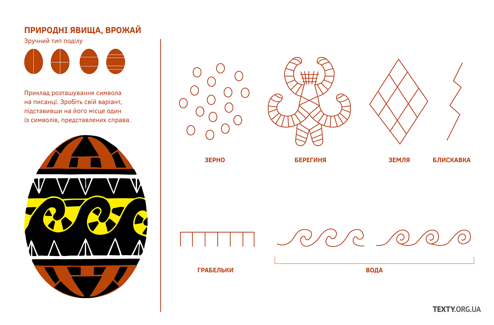
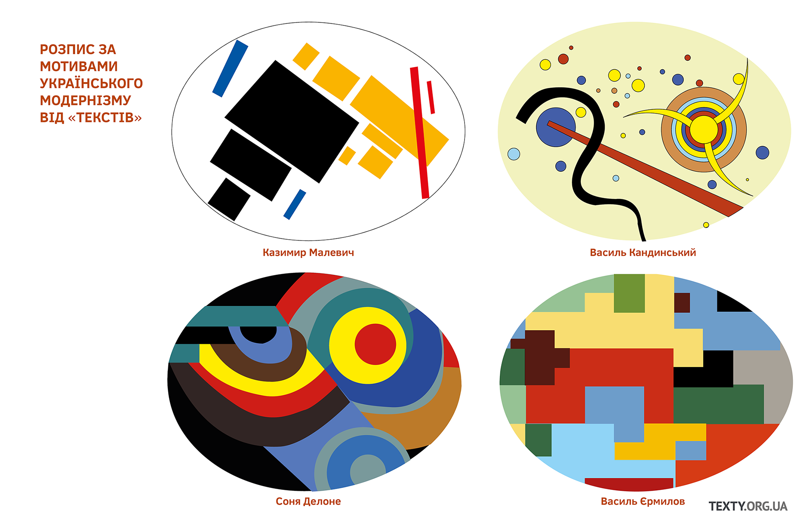

Писанка. Короткий путівник
Підготувала Надя Кельм
Перед Великоднем, що припадає на прийдешню неділю, 28 квітня, християни готуватимуться до свята і, з-поміж іншого, розмальовуватимуть яйця. Яйце наділене багатою символікою, воно означає першопочаток світу, зародження всесвіту, життя і воскресіння.
Знавці дослідили, що писанка має понад сто символічних візерунків. Скажімо, триніг – це небо, земля та повітря. Кривулька передає нитку життя, вічність руху планет. Зображаючи грабельки, наші предки закликали дощ – такі писанки малювали в посуху. Сварга – знак вогню та сонця.
Мають символічне навантаження і кольори. Червоний – це радість життя, любов. Жовтий – зірки й місяць. Зелений – багатство. Чорний із білим передають пошану за покійними родичами.
Пропонуємо нашим читачам розмалювати писанки візерунками, підібраними «Текстами» – тут є як давні традиції, так і розписи за мотивами українського модернізму.
 








